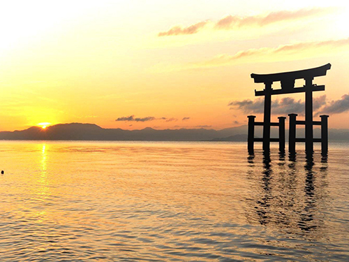
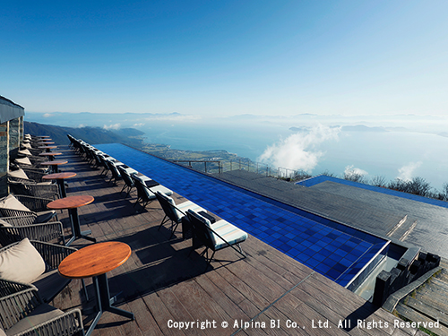
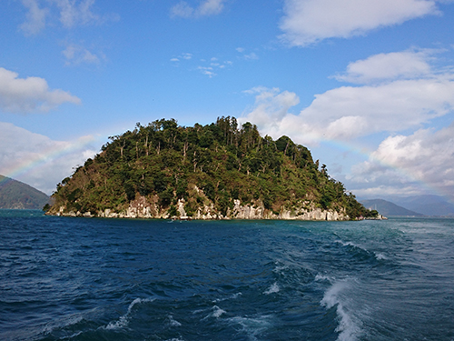

白鬚神社

湖に浮かぶ鳥居が幻想的な神社。インスタ映えスポットとしても人気です。
琵琶湖テラス

びわ湖バレイの絶景展望台。ロープウェイで気軽にアクセスできます。
竹生島

竹生島は、琵琶湖の北部に浮かぶ神秘的な離島で、パワースポットとしても人気です。長浜港から船で、約30分のアクセスです。

湖に浮かぶ鳥居が幻想的な神社。インスタ映えスポットとしても人気です。

びわ湖バレイの絶景展望台。ロープウェイで気軽にアクセスできます。

竹生島は、琵琶湖の北部に浮かぶ神秘的な離島で、パワースポットとしても人気です。長浜港から船で、約30分のアクセスです。